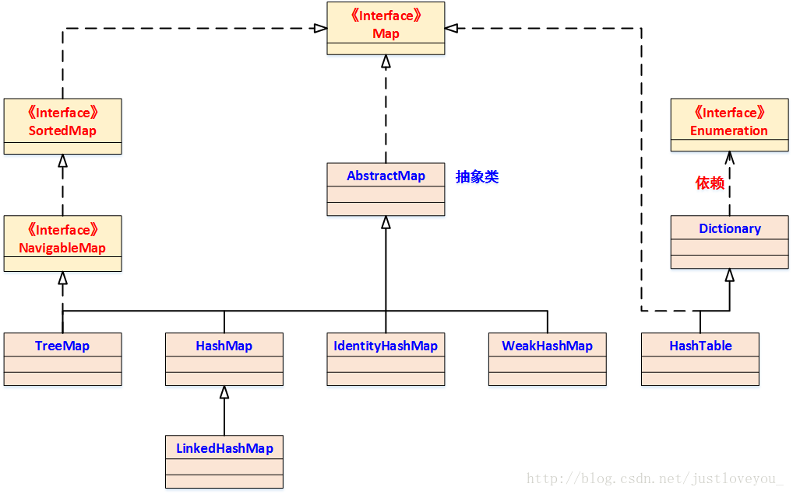
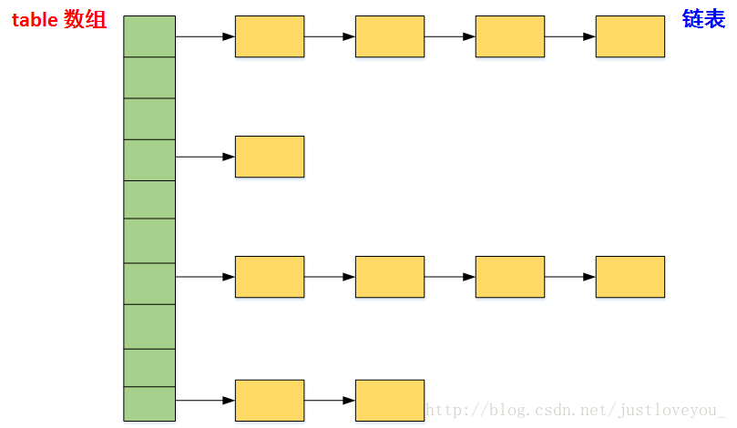

map简介

hashMap
数据结构是数组+链表。 
初始化
初始容量：16
static final int DEFAULT_INITIAL_CAPACITY = 1 << 4; // aka 16
static final float DEFAULT_LOAD_FACTOR = 0.75f; //负载因子
static final int TREEIFY_THRESHOLD = 8;//链表长度>=8转为红黑树
static final int UNTREEIFY_THRESHOLD = 6;
static final int MIN_TREEIFY_CAPACITY = 64;
put元素的流程
- 检查table的size==0，如果为0，初始化table
- 首先根据对象计算hashcode值，映射到map中数组的下标，如果改数组没有元素，new Node()直接放置。
- 如果有元素，key是否一样，如果key一样，直接替换value。
- key不一样，说明有hash冲突，node是否可以转换为TreeNode，可以转换的话，使用TreeNode的put方法。不能转为TreeNode，放到数组下标对应的链表上，如果链表长度>=8，转为红黑树。
- 判断size>loadFactor，如果到达阈值，触发扩容，进行rehash
get元素的逻辑
- 首先根据对象计算hashcode值，映射到map中数组的下标。
- 如果是一个元素，就直接返回。
- 如果是一个链表，遍历链表，根据key值判断元素，返回。不存在hash冲突的情况下，时间复杂度是o(1)。
hash冲突、hash碰撞
碰撞处理：常用的有四种方式，
- 开放定址法(线性探测，二次探测，伪随机探测)
- 拉链法
- 再散列法（双重散列，多重散列）
- 建立一个公共溢出区
hashmap负载因子为什么是0.75
hashmap容量永远不会用完，当容量达到0.75的时候就会扩容，也就意味着四分之一的空间浪费。 当数组下标剩余很少的时候，出现hash冲突的概率大大增加。0.75是统计学的数据，是空间和效率之间的一个平衡值。
LinkedHashMap
LinkedHashMap继承与hashMap，将HashMap和双向链表合二为一。LinkedHashMap 在不对HashMap做任何改变的基础上，给HashMap的任意两个节点间加了两条连线(before指针和after指针)，使这些节点形成一个双向链表。在LinkedHashMapMap中，所有put进来的Entry都保存在HashMap中，但由于它又额外定义了一个以head为头结点的空的双向链表，因此对于每次put进来Entry还会将其插入到双向链表的尾部

TreeMap
底层数据结构是红黑树。 TreeMap是如何保证其迭代输出是有序的呢？其实从宏观上来讲，就相当于树的中序遍历(LDR)
map最高效的遍历方式：
使用 entrySet 遍历 Map 类集合 KV，而不是 keySet 方式进行遍历。 说明：keySet 其实是遍历了 2 次，一次是转为 Iterator 对象，另一次是从hashMap中取出 key 所对应的 value。而entrySet只是遍历了一次就把 key 和 value 都放到了entry中，效率更高。如果是 JDK8，使用 Map.foreach 方法。
Map<String, String> map = new HashMap<>();
map.put("aa", "111");
map.put("bb", "222");
map.put("cc", "333");
for (Map.Entry<String, String> m : map.entrySet()) {
String key = m.getKey();
String value = m.getValue();
System.out.println("key==" + key + " value==" + value);
}
map中key-value是否可以为空
| 集合类 | key | value | superclass | 说明 |
|---|---|---|---|---|
| HashTable | 不可以 | 不可以 | Dictionary | 线程安全 |
| ConcurrentHashMap | 不可以 | 不可以 | AbstractMap | 分段锁技术 |
| TreeMap | 不可以 | 可以 | AbstractMap | 不安全 |
| HashMap | 可以 | 可以 | AbstractMap | 不安全 |
| LinkedHashMap | 可以 | 可以 | AbstractMap | 不安全 |
HashMap 和 Hashtable 的区别
- 线程是否安全： HashMap 是非线程安全的，HashTable 是线程安全的；HashTable 内部的方法基本都经过synchronized 修饰。（如果你要保证线程安全的话就使用 ConcurrentHashMap 吧！）；
- 效率： 因为线程安全的问题，HashMap 要比 HashTable 效率高一点。另外，HashTable 基本被淘汰，不要在代码中使用它；
- 对Null key 和Null value的支持： HashMap 中，null 可以作为键，这样的键只有一个，可以有一个或多个键所对应的值为 null。。但是在 HashTable 中 put 进的键值只要有一个 null，直接抛出 NullPointerException。
- 初始容量大小和每次扩充容量大小的不同 ： ①创建时如果不指定容量初始值，Hashtable 默认的初始大小为11，之后每次扩充，容量变为原来的2n+1。HashMap 默认的初始化大小为16。之后每次扩充，容量变为原来的2倍。②创建时如果给定了容量初始值，那么 Hashtable 会直接使用你给定的大小，而 HashMap 会将其扩充为2的幂次方大小（HashMap 中的tableSizeFor()方法保证，下面给出了源代码）。也就是说 HashMap 总是使用2的幂作为哈希表的大小,后面会介绍到为什么是2的幂次方。
- 底层数据结构： JDK1.8 以后的 HashMap 在解决哈希冲突时有了较大的变化，当链表长度大于阈值（默认为8）（将链表转换成红黑树前会判断，如果当前数组的长度小于 64，那么会选择先进行数组扩容，而不是转换为红黑树）时，将链表转化为红黑树，以减少搜索时间。Hashtable 没有这样的机制。
HashMap 和 HashSet区别
HashSet 底层就是基于 HashMap 实现的。（HashSet 的源码非常非常少，因为除了 clone() 、writeObject()、readObject()是 HashSet 自己不得不实现之外，其他方法都是直接调用 HashMap 中的方法。
HashMap 的长度为什么是2的幂次方
为了能让 HashMap 存取高效，尽量较少碰撞，也就是要尽量把数据分配均匀。Hash 值的范围值-2147483648到2147483647，前后加起来大概40亿的映射空间，只要哈希函数映射得比较均匀松散，一般应用是很难出现碰撞的。但问题是一个40亿长度的数组，内存是放不下的。所以这个散列值是不能直接拿来用的。用之前还要先做对数组的长度取模运算，得到的余数才能用来要存放的位置也就是对应的数组下标。这个数组下标的计算方法是“ (n - 1) & hash”。（n代表数组长度）。这也就解释了 HashMap 的长度为什么是2的幂次方。
这个算法应该如何设计呢？
我们首先可能会想到采用%取余的操作来实现。但是，重点来了：“取余(%)操作中如果除数是2的幂次则等价于与其除数减一的与(&)操作（也就是说 hash%length==hash&(length-1)的前提是 length 是2的 n 次方；）。” 并且 采用二进制位操作 &，相对于%能够提高运算效率，这就解释了 HashMap 的长度为什么是2的幂次方。